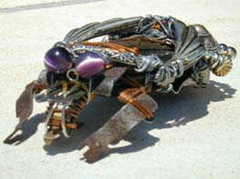
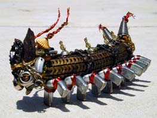
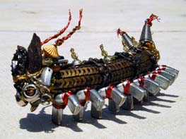
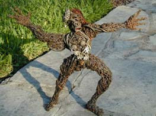
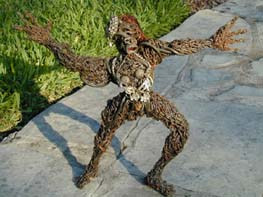
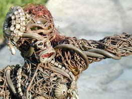

A project for student artists in BeitLahem (Bethlehem)
by Samia A. Halaby
in To be conducted at The International Center of BeitLahem
In cooperation with Faten Nastas Mitwasi, Art Coordinator

 

both by Kari Steele
 by Kari steele
by Kari steele
 

both by Jesse Lott

both by Jesse Lott
="pointer-events:none;cursor:default;" href="mailto:halabyweb@verizon.net">CLICK HERE to make comments.
Copyright, Samia A. Halaby, 1998, All rights reserved. To request permission to reproduce
any part of these words or pictures ="pointer-events:none;cursor:default;" href="mailto:halabyweb@verizon.net">CLICK HERE.
return to project
="pointer-events:none;cursor:default;" href="http://www.art.net/">![[Art on the Net]](/images/artnet_button.gif)